두나무의 기술력과 하이브의 콘텐츠 제작 역량이 만나 설립된 회사. 크리에이터 플랫폼 Vuddy(버디)의 커머스·굿즈 기획으로 시작해 가챠, 팬 관리, 채팅, 커뮤니티로 범위를 넓혔고, 2026년부터는 미출시 상태인 신규 AI 서비스의 런칭 기획을 맡고 있습니다.
0→1 런칭신규 AI 서비스크리에이터 커머스
신규 AI 서비스 — 0→1 런칭 기획 2026 — 현재
미출시 신규 서비스의 런칭 전체 기획을 총괄 — 화면·플로우·정책 설계, 오픈 스펙 정의, QA 전략 수립
대화 도메인의 컨텍스트·메모리 정책과 UGC 제작 도구를 설계하고, 콘텐츠 검열 엔진과 제재 정책의 기획 오너십 보유
가입에서 첫 대화, 구독으로 이어지는 전환 퍼널을 출시 전에 정의하고 이벤트 스키마 구축
KO·JA·EN 다국어 관리 체계와 외부 엔진 연동 AI 이미지 생성 기능 기획
Vuddy — 크리에이터 커머스 2024.08 — 2025
커스텀 주문제작, 실물·디지털 결합 상품, 스튜디오 판매 관리 등 커머스 전반의 정책과 플로우 설계
재고 기반 확률형 가챠를 새로 기획하고 PRD 작성, 대리 가챠의 정렬·검색·확률 정책 개선
Shoplive SDK와 OBS 송출 위젯을 연동해 라이브·숏폼에서 바로 구매로 이어지는 판매 경로 기획
판매 스킴과 펀딩 상위 기획, 정산 인보이스 프로세스 개선 담당
무료 가챠권 → 유료 결제 전환율 7.5% · 재직 기간 중 Vuddy 유료 사용자 약 10배, 가입자 약 7배 성장(2025.05→08)한 구간의 구매 전환 기능 담당
Vuddy — 팬 관리 · 커뮤니티 · 데이터 2025 하반기 — 2026
누적 결제 기준 팬 등급과 팔로워 관리를 설계하고 스튜디오·버디 양쪽 스펙 통합, Sendbird 연동 채팅 상세 기획
커뮤니티 게시판 신규 기획과 댓글 고도화 — 댓글에서 구매로 이어지는 전환 퍼널 분석이 근거
Amplitude·Mixpanel 이벤트 트래킹, Redash 리포팅, Airbridge 어트리뷰션 도입과 채널톡 상담 정책 기획
CS 문의 약 30% 감소, 수동 작업 자동화로 운영 업무 시간 50% 단축, 레거시 개선 과제 10건 이상 완료
물류 프로세스의 초기 기획부터 구축·운영까지 담당했으며, 기사·판매자·관제·고객 네 개 사용자군의 프로덕트를 총괄했습니다. 3년 2개월 전 기간 원격 근무.
라스트마일OMS · TMS로우코드
라스트마일 배송 기사 앱 2021.07 — 2023.02
쿠팡 배송 현장 필드 리서치로 고정형·플렉스 기사 페르소나를 정의하고 앱의 기능 범위를 설정
본인인증, 자동·수동 배차, 출입 정보 수집, 바코드 스캔, 실시간 위치 추적을 설계
MVP를 PWA로 두 달 만에 내보내 시장을 검증한 뒤, React Native로 Android와 iOS를 순차 출시
박스 단위 분류 UX 설계로 상하차 시간 30분 → 3분 (약 90% 단축)
오프라인 모드 업로드로 물품당 배송 완료 9분 → 5분 (약 44% 단축)
공동현관 출입 정보 수집 및 UX 개선으로 미배송률 일평균 60% 감소
쇼핑몰 배송 관리 OMS 2021.10 — 2024.04
대량 주문 업로드, 배송·반품 신청, 송장 출력, 알림톡 관리, 실시간 배송 추적을 설계
v2·v3를 Retool로 직접 개발해 배포하고 유지보수 — 화주사 요구사항을 즉시 반영하기 위한 선택
2023년 Q1 대비 Q2 신규 계약률 50% 증가, 물동량 20% 증가
작업 단위당 소요 시간 25% 단축, 서버 요청 수 50% 감소, 검색 실패율 40% 감소
배송 관제 TMS 2021.10 — 2023.12
자동 분류가 당일 현장 상황을 반영하지 못해 허브에서 재분류가 발생하는 문제를 정의
사전 플래닝 단계에서 운영자가 클러스터를 직접 편집하는 GIS 화면과, 데이터 기반 상·하차 경로 자동 생성 로직을 설계
자동 배차와 예약 관리, 간선 라우트 관리, 실시간 운행 관제를 함께 담당
재분류 필요성 50% 감소, 분류 오류율 0.1%
배송 리드타임 20% 단축, 대응 시간 25% 감소, 클러스터링 정확도 30% 향상
배송 추적 · 백오피스 · 알림 · 브랜딩
고객용 배송 추적 웹앱에 실시간 조회와 반품·교환 접수 설계 — 반품 리드타임 내 처리율 90%, 월 문의 50 → 30건, MAU 30% 상승
지역·셀러·배차·분류를 관리하는 물류 백오피스를 구축해 관리 효율을 40% 향상
사용자 그룹별 알림톡 템플릿과 트리거를 설계해 전송 도달률 95%를 달성
서비스 브랜드 ‘딜리래빗’ 네이밍과 공식 홈페이지 1.0 기획 — 신규 라이더 30%, 신규 화주사 20%, 방문자 50% 증가
팬이 셀럽에게 개인화된 영상 메시지를 요청하는 서비스 크림(CREAM)의 출시와 프로덕트 관리를 담당했습니다.
엔터테인먼트3개 플랫폼 출시인앱 결제
CREAM 출시 2019.10 — 2021.05
Cameo·CelebVM 경쟁사 분석으로 차별화 지점을 잡고 비즈니스 구조를 정리
팬이 멤버를 골라 요청하면 셀럽이 24~48시간 안에 녹화해 전달하는 양방향 플로우를 설계
IA 구성, 기능·정책 문서, 와이어프레임을 작성하고 기획·개발·QA·배포 전 과정을 관리
Figma와 FramerX로 프로토타이핑하고 Android, iOS, 반응형 웹 세 플랫폼을 출시
인앱 결제 도입 후 6개월 내 매출 25% 증가, 웹앱 PG사 결제 도입으로 수수료 15% 절감
‘비타민에도 취향을 담을 수 있을까’라는 질문에서 출발한 맞춤 건강기능식품 서비스의 웹 출시를 맡았습니다.
헬스케어O2O프리랜서
맞춤 비타민 웹 서비스 2019
브랜드 정의부터 시작해 구매 의사결정 단계별 서비스 전략을 수립
와이어프레임과 UX 설계, 코디 신청 화면을 포함한 주요 플로우를 디자인
컬러와 컴포넌트 시스템을 구축해 브랜드 경험을 화면 전반에 적용
미술품 O2O 서비스의 브랜드 아이덴티티를 세우고, 사업 다각화를 위해 기업 대상 그림 구독 서비스를 기획했습니다.
브랜딩B2B · B2E 전환구독 서비스
기업 대상 그림 구독 서비스 2018 — 2019
B2C에 머물던 사업을 B2B·B2E로 확장하는 구독 서비스를 기획
브랜드 아이덴티티를 정의하고 소셜 미디어 광고와 마케팅 콘텐츠를 제작
인포그래픽 프레스킷과 사업 소개서를 작성
매출 70% 성장
Deck
03 / 요약 덱
Portfolio
04 / 케이스 스터디
딜리버스 판매자 시스템(OMS)에서 만들었던 주문 관리 화면을 축약해 다시 만든 것입니다. 실제로 동작합니다 — 검색하고, 정렬하고, 여러 건을 골라 상태를 한 번에 바꿔 보세요.
0건 선택
주문번호
수취인
지역
상태
등록일
조건에 맞는 주문이 없습니다. 검색어를 지우거나 필터를 전체로 바꿔 보세요.
실제 시스템에서는 이 위에 대량 주문 업로드, 송장 출력, 알림톡 발송이 붙었습니다. 결과 내 검색을 도입해 서버 요청 수를 50%, 검색 실패율을 40% 줄였습니다.
데이터는 구조를 보여주기 위한 예시이며 실제 고객 정보가 아닙니다.
지표를 만든다는 건 숫자를 모으는 일이 아니라 어디서 사람이 빠지는지 정의하고 그다음 무엇을 할지 정하는 일입니다. 신규 AI 서비스 런칭 전에 설계한 전환 퍼널의 구조를 그대로 옮겼습니다.
이 이벤트 스키마를 출시 전에 확정해 둔 덕분에, 런칭 직후부터 단계별 이탈을 근거로 개선 순서를 정할 수 있었습니다.
수치는 퍼널 구조와 판단 방식을 보여주기 위한 예시입니다.
딜리버스 판매자 시스템(OMS) 1.0의 PRD 목차입니다. 전문 대신 무엇까지 정의하고 개발에 넘겼는지를 보여줍니다. 항목을 누르면 실제로 적었던 내용의 요약과, 그 항목이 없을 때 어떤 질문이 돌아오는지가 함께 나옵니다.
정책과 예외 처리를 문서에서 먼저 닫아두면 개발 중 되묻는 횟수가 줄고, QA가 테스트 케이스를 문서에서 그대로 뽑아 쓸 수 있습니다.
퇴사 후 공개 가능한 범위로 요약했으며, 화주사명과 금액은 제외했습니다.
같은 화면을 정의서 형태로 옮긴 것입니다. 번호를 누르면 그 영역의 기능·정책·예외가 나옵니다. 개발자와 QA가 이 문서만 보고 구현과 검증을 할 수 있는 수준으로 적는 것이 기준이었습니다.
1234567
이 정의서를 그대로 구현한 결과가 Development 항목의 어드민 데모입니다. 정의서 → 구현 → 지표까지 한 사람이 이어서 다뤘습니다.
실제 문서에는 각 항목마다 API 응답 조건과 문구 원본이 함께 붙습니다.
—
Projects
05 / 프로젝트 & 기록
01 / VUDDY
Vuddy 커머스 · 커뮤니티 기획
크리에이터가 굿즈를 팔고 팬이 모이는 플랫폼에서 가챠·라이브·팬 등급·커뮤니티 네 갈래를 맡았습니다. 모두 구매 전환으로 이어지는 경로 위에 있습니다.
커머스리텐션전환
자세히 →
재직 기간 중 유료 사용자가 약 10배 늘어난 구간에서 구매 전환에 직접 닿는 기능들을 담당했습니다. 네 가지 작업이 따로 있는 것처럼 보이지만, 결국 팬이 크리에이터에게 돈을 쓰는 경로를 어디서 만들고 어디서 끊기지 않게 하느냐의 문제였습니다.
재고 기반 확률형 가챠
크리에이터가 디지털·실물 굿즈를 확률형 상품으로 파는 기능입니다. 판매자도 구매자도 납득할 수 있는 확률 표기와 재고 처리가 핵심 과제였습니다. 확률과 재고가 따로 놀면 재입고마다 수동 보정이 필요해집니다.
재고 기반 확률 갱신 구조를 신규 기획하고 PRD 작성 — 재입고·품절 시 확률이 자동 재계산되도록 설계
대리 가챠의 정렬·검색·확률 정책 개선, 디지털 굿즈 컬렉션 등급 노출 정책 수립
배송지 변경과 부분 취소, 묶음 배송, 다운로드 기한 등 주문 이후 정책까지 함께 정의
판매 스킴·펀딩 상위 기획과 정산 인보이스 프로세스 개선
무료 가챠권 → 유료 결제 전환율 7.5%
라이브 · 숏폼 커머스 연동
크리에이터가 라이브를 켜면 시청과 구매가 다른 화면에서 일어나고 있었습니다. 방송을 보다가 상품을 확인하려면 이탈해야 했고, 돌아오면 흐름이 끊겼습니다. 시청 화면 안에서 구매가 끝나도록 경로를 다시 짰습니다.
Shoplive SDK 연동 스펙 검토와 라이브·숏폼 양쪽의 판매 노출 정책 기획
OBS 송출 위젯 기획 — 크리에이터가 방송 화면에 상품과 이벤트를 직접 띄울 수 있는 구조
이벤트 판매 페이지와 채널홈·포스트의 상위 기획, 라이브 종료 후 다시보기에서의 판매 유지 정책
외부 SDK에 의존하는 구간이라 장애 시 대체 경로와 판매 중단 기준을 함께 정의
팬 등급과 부스트
팬은 자신이 알아봐지길 바라고, 크리에이터는 누가 오래 남아 있는지 알고 싶어 합니다. 두 요구를 하나의 등급 체계로 묶었습니다.
누적 결제 금액 기준 팬 등급과 팔로워 관리 화면 설계 — 스튜디오와 앱 양쪽 스펙을 하나로 통합
부스트 과제 기획 및 FE·BE·App·QA 리뷰 일정 조율
Sendbird 연동 채팅 스펙 검토와 사용자 화면 상세 기획
등급별 재구매율과 채팅 기반 리텐션을 판단 지표로 정의
커뮤니티와 댓글 → 구매 전환
커뮤니티는 흔히 체류 시간으로 평가되지만, 커머스 플랫폼에서는 그것만으로 투자를 정당화하기 어렵습니다. 댓글에서 구매로 이어지는 경로를 먼저 그린 뒤 기능을 정했습니다.
커뮤니티 게시판 신규 기획 — 리서치에서 상위 기획, 스튜디오·앱 상세 기획까지
댓글 고도화를 댓글 → 구매 전환 퍼널 분석을 근거로 설계
장바구니 개편과 홈 개편의 상위·상세 기획
장바구니 담기율, 결제 완료율, AOV, 게시글 → 댓글 전환율을 판단 축으로 설정
미출시·비공개 영역이 섞여 있어 화면은 싣지 않았습니다.
02 / ESSAY
비개발자의 로우코드 개발 — 물류 OMS 구축 후기
Retool로 복잡한 시스템을 직접 구현하며 개발 의존도를 낮춘 과정. 로우코드가 물류 업계의 협업과 의사소통에 어떤 역할을 하는지에 대한 기록.
RetoolDatabase
자세히 →
Retool로 복잡한 운영 시스템을 직접 구현하며 개발 의존도를 낮춘 과정을 정리한 글입니다. 물류 업계에서 로우코드가 협업과 의사소통에 어떤 역할을 하는지까지 함께 다룹니다.
화면 구현에 디자이너·퍼블리셔·개발자가 모두 필요해 개발 기간이 길어지는 구조적 한계를 문제로 정의
로우코드로 수정·배포·롤백이 가능한 시스템을 낮은 비용으로 유지
물류 최적화 이터레이션 속도에 맞춘 개발 방식의 전환
OMS가 물류에서 갖는 위치
온라인 시장이 빠르게 커지면서 물류 업체들은 고객 요구에 신속하게 대응하고 운영 효율을 끌어올리기 위해 디지털 전환을 서두르고 있습니다. 그중 주문·배송 관리 시스템(OMS)은 고객의 주문부터 최종 배송까지 모든 단계를 통합해 관리하는 핵심 시스템입니다. 주문 정보를 정확히 관리하고 처리 과정을 최적화해 오류를 줄이는 것이, 곧 고객 신뢰로 이어지기 때문입니다.
MVP 이후에 드러난 문제
제품을 처음 기획할 때 완벽한 아키텍처를 갖추고 시작하기는 어렵습니다. 서비스가 아직 정의되지 않았고 데이터 구조와 흐름이 바뀔 가능성이 높기 때문입니다. OMS 역시 PWA로 MVP를 먼저 만들어 시장 적합성을 확인했습니다.
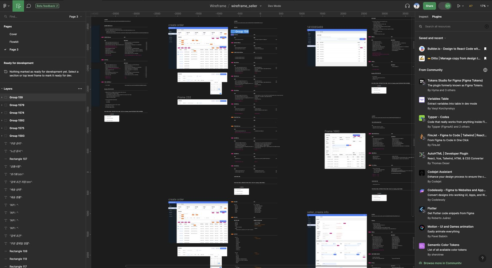
Figma로 작성한 초기 MVP 기획 문서 — OMS 시스템 와이어프레임
문제는 그다음이었습니다. 실시간 주문·배송 데이터 처리와 연동, 여러 시스템 간 데이터 통합, 개인정보 보안까지 높은 수준의 기술 역량이 필요했고, 요구사항 변화에 빠르게 대응할 수 있는 유연한 설계도 부족했습니다. 무엇보다 유지보수 과정에서 제품 구조를 개발자에게 전부 전달하는 데 매번 큰 리소스가 들었습니다. 이 지점을 해결하려고 로우코드 툴 Retool을 도입했습니다.
요구사항 정의와 상세 스펙
주문 등록(업로드), 배송·반품 신청, 배송 상태 모니터링을 주요 목표로 잡고, 각 기능의 상세 스펙을 노션에 작성했습니다.
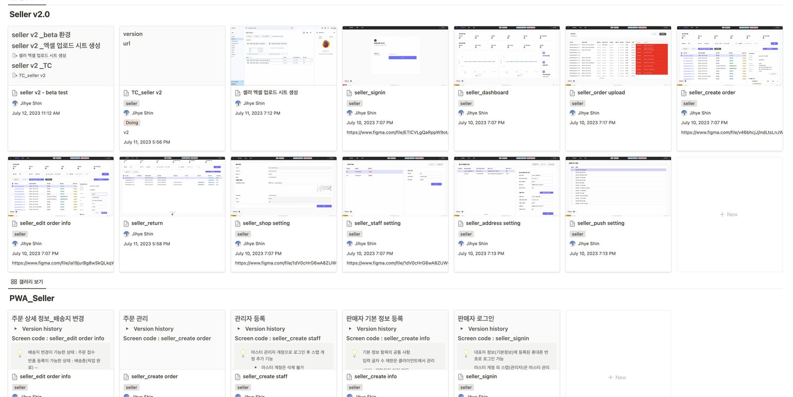
노션으로 작성한 기능별 상세 스펙
UI 구성과 데이터 소스 연결
Retool에서는 드래그 앤 드롭으로 UI를 구성합니다. 주문 목록 테이블, 주문 상세 폼 같은 요소를 배치하고 주문 데이터베이스와 연결했습니다.
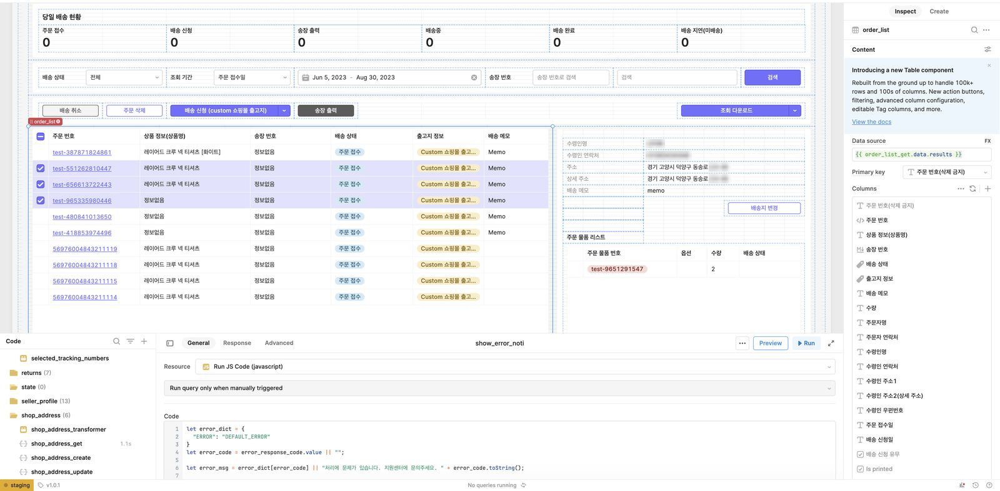
드래그 앤 드롭으로 구성한 주문 관리 화면
쿼리와 데이터 조작
SQL로 주문 데이터베이스에서 필요한 정보를 추출하고, 필터를 걸어 특정 조건의 주문을 검색하도록 만들었습니다.
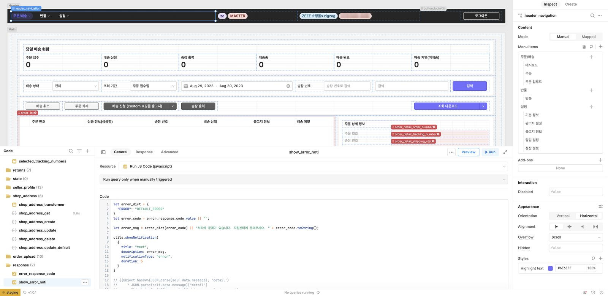
SQL 쿼리로 주문 데이터 조회·필터링
실시간 모니터링과 외부 연동
데이터 소스의 변경을 감지해 자동으로 갱신되도록 해서 주문 상태 변화를 실시간으로 볼 수 있게 했습니다. 배송 추적 API 같은 외부 서비스와도 데이터를 주고받도록 연결했습니다.
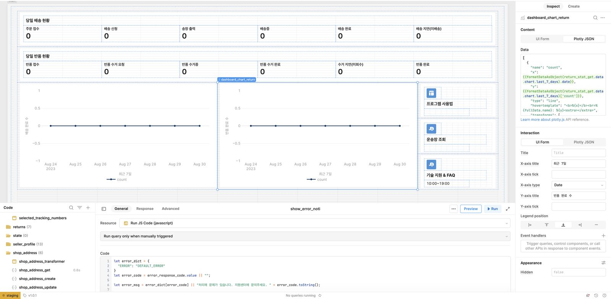
주문 상태 실시간 모니터링
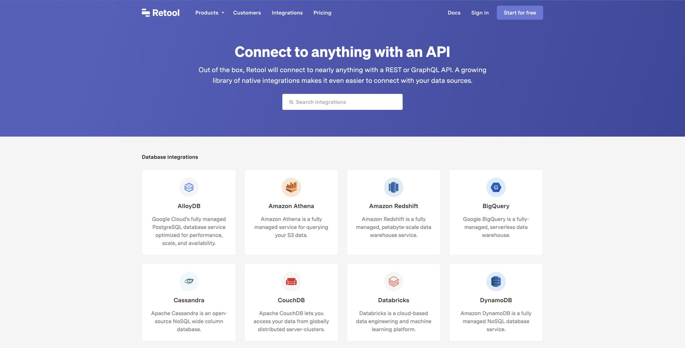
외부 배송 추적 API 연동
남은 생각
물류처럼 프로세스와 데이터가 복잡하게 얽힌 분야일수록 로우코드의 역할이 커집니다. 개발자 의존도를 낮추면서 동시에 업무 프로세스를 최적화할 수 있기 때문입니다. 복잡한 프로세스를 만들고 싶지만 개발 시간과 비용에 막혀 있다면, 로우코드는 비전문가도 시스템을 직접 만들고 팀 내부의 협업과 의사소통을 끌어올리는 수단이 됩니다.
개발자 리소스 투입 없이 v2·v3를 직접 개발·배포하고 유지보수까지 수행
03 / WFA
로우코드 개발 — WFA #1–4
로우코드 플랫폼으로 기능을 빠르게 구현하고 협업 속도를 높인 경험. 시간 단축, 효율 향상, 비용 절감으로 이어진 개발 방식의 전환.
RetoolHTML · CSS
자세히 →
로우코드 플랫폼으로 기능을 빠르게 구현하고 협업 속도를 높인 경험을 네 편으로 나눠 기록했습니다. 공공 API를 직접 신청해 연동하고, 화면까지 혼자 완성하는 것이 목표였습니다.
Retool 기반 구현 과정과 SQL·JavaScript 활용 방식
시간 단축, 효율 향상, 비용 절감으로 이어진 지점
만든 것 — Weather Forecast App
기상청 단기예보와 OpenWeatherMap을 연동해 현재 날씨·예보·중기예보를 보여주는 앱입니다. UI 요소를 드래그 앤 드롭으로 배치하고 필요한 로직을 시각적으로 연결해, 복잡한 코드 작성 없이 프로토타입을 빠르게 만들었습니다.
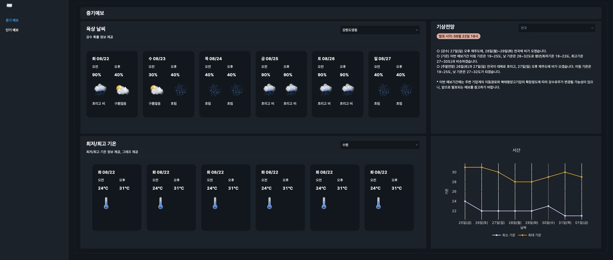
Retool로 개발한 Weather Forecast App
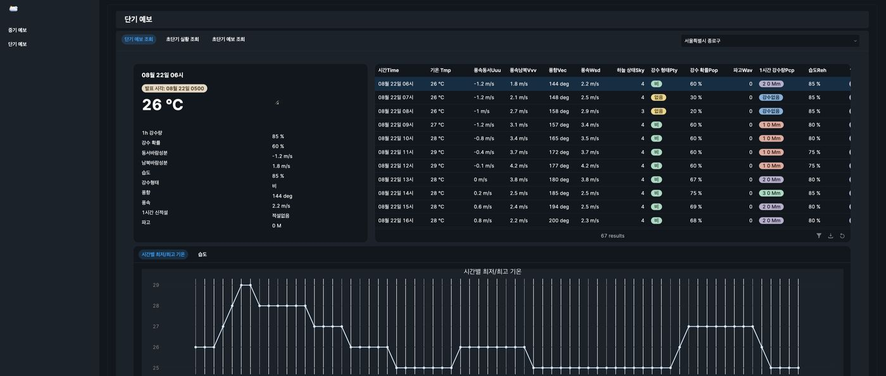
예보 조회 화면
네 편의 구성
편
다룬 내용
#1
로우코드 개발 환경 구성과 프로젝트 설계
#2
공공 API 신청부터 ajax로 기상청 단기예보 조회 구현
#3
OpenWeatherMap API로 현재 날씨·예보 개발
#4
중기예보 서비스 명세 정리
남은 생각
로우코드는 코드를 안 쓰게 해주는 도구가 아니라, 기획자가 자기 손으로 끝까지 만들어 볼 수 있게 해주는 도구에 가깝습니다. 실시간으로 화면을 공유하며 수정할 수 있어 개발자와의 의사소통도 훨씬 수월해졌습니다.
API 신청부터 화면 구현까지 개발자 없이 단독 완성
04 / TRACKING
실시간 배송 추적 웹앱 + 프로모션 기획
배송 조회, 반품 접수, 실시간 알림을 담은 고객용 웹앱. 광고 배너 기반 추가 수익 모델과 KPI 중심 성과 측정 방식을 함께 설계.
PMPWA
자세히 →
고객이 배송 상태를 직접 확인하고 반품까지 접수하는 웹앱입니다. 광고 배너를 통한 추가 수익 모델을 함께 설계했습니다.
실시간 배송 조회, 반품·교환 신청, 배송 주소 수집, 주소 검색 설계
광고주 유치를 위한 배너 지면과 KPI 기반 성과 측정 방식 기획
왜 필요했나
이커머스가 커지면서 주문한 물건이 지금 어디 있는지 실시간으로 확인하려는 요구가 늘었습니다. 배송 추적은 고객 만족도와 재구매율로 직결되고, 반품·교환 프로세스를 자동화하면 운영 비용도 함께 줄어듭니다. 그래서 고객 만족도 향상 · 운영 효율 증대 · 데이터 관리 강화 세 가지를 목표로 잡았습니다.
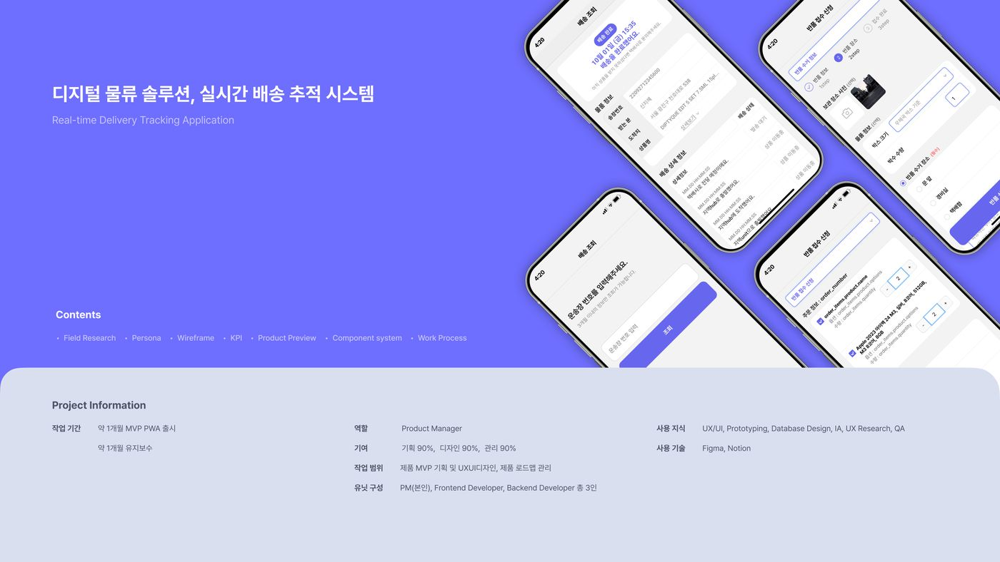
실시간 배송 추적 웹앱
주요 기능
기능
설명
배송 조회
운송장 번호를 통한 배송 상태 조회
배송 상세 정보
배송 상세 이력 조회
반품 접수
반품 신청 접수
수령 희망 장소
고객이 희망하는 수령 장소 설정
공동현관 출입정보
공동현관 출입 정보 제공 및 등록
실시간 알림
실시간 배송 상태 알림
고객 데이터는 정해진 기간이 지나면 자동 삭제되도록 정책을 함께 세웠습니다. 개인정보와 주문 데이터를 다루는 화면이라 보관 기간을 먼저 정하지 않으면 나중에 손대기 어려워집니다.
광고 배너 — 조회 화면을 수익 지면으로
배송 조회는 주문 한 건당 여러 번 재방문이 일어나는 화면입니다. 이 특성을 광고 지면으로 활용해 추가 수익 모델을 만들었습니다.
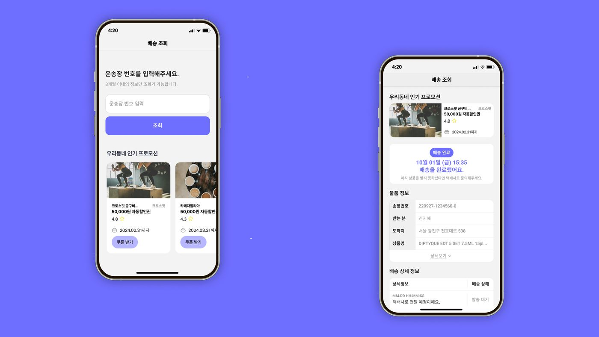
광고 프로모션 배너 기획
기능
설명
광고 배너 노출
메인 화면 및 배송 조회 화면에 노출
광고 클릭
배너 클릭 시 상세 페이지로 이동
광고 전환 추적
클릭 후 전환 발생 시 추적
광고 배너 관리
어드민에서 등록·수정·삭제, 노출 일정과 빈도 설정
과금은 CPM(노출) · CPC(클릭) · CPA(전환) 세 가지로 나눠 광고주가 목적에 맞게 고르도록 했고, 광고주에게는 실시간 성과 대시보드와 월간 분석 보고서를 제공하도록 설계했습니다. 프리미엄 사용자에게는 광고 없는 버전을 제공해 사용자 경험과 수익을 분리했습니다.
성과 측정
사용자 수, 반품·교환 신청 처리 속도, 고객 만족도를 핵심 지표로 두고 구글 애널리틱스와 자체 분석 도구로 추적했습니다. 배너는 디자인과 위치를 A/B 테스트해 클릭률·전환율을 지속적으로 개선했습니다.
반품 리드타임 내 처리율 90%, 월평균 문의 50 → 30건, MAU 30% 상승
05 / STUDY
티메프 사태 정리 — PG사 / VAN사
2024년 정산 지연 사태를 구조, 자금 관리, 내부 통제, 규제의 관점에서 정리. 결제 생태계에서 PG사와 VAN사가 하는 일을 함께 짚은 스터디.
이커머스2024
자세히 →
2024년 7월 티몬·위메프 정산 지연 사태를 결제 생태계 구조의 관점에서 정리한 스터디입니다. 사건 자체보다 돈이 어디서 멈췄는지를 이해하려고 PG사와 VAN사의 역할부터 짚었습니다.
PG사와 VAN사의 역할 구분과 자금 흐름 정리
구조적 문제, 자금 관리 미흡, 내부 통제 부족, 규제 공백을 원인으로 분석
투명한 자금 관리와 내부 통제 강화라는 대응 방향
PG사와 VAN사는 무엇이 다른가
PG사(Payment Gateway)는 온라인 결제 대행사입니다. 고객의 결제 정보를 카드사·은행에 전달해 승인을 받고, 여러 결제 수단을 한 플랫폼에서 관리하며, 거래 내역을 기록합니다. 요즘은 간편결제를 지원하며 VAN사를 건너뛰기도 합니다.
VAN사(Value Added Network)는 오프라인 카드 결제의 네트워크 사업자입니다. 단말기와 카드사 사이의 데이터 통신을 담당하고, 포인트 적립·쿠폰 같은 부가 서비스를 붙입니다. 온라인 결제에서는 PG사에게 결제 정보를 받아 중계하기도 합니다.
PG사
VAN사
수수료를 받는 곳
가맹점에서 받고 카드사에 냄
가맹점이 아닌 카드사에서 받음
서비스 범위
결제 + 정산 (계약한 정산일에 일괄 지급)
결제만 (카드사별 지급일이 다름)
수수료 수준
평균 2.5~3%
건당 250~300원
여기서 핵심은 정산을 누가 쥐고 있느냐입니다. PG는 결제와 정산을 함께 처리하므로 대금이 일정 기간 플랫폼·PG 쪽에 머뭅니다. 이 지점이 이번 사태의 무대가 됐습니다.
국내 주요 사업자
구분
사업자
PG사
KG이니시스, NHN KCP, LG유플러스, 카카오페이, 네이버페이
VAN사
NICE정보통신, KIS정보통신, KICC, KSNET, 세틀뱅크
원인 분석
원인
내용
구조적 문제
중개 플랫폼의 정산 과정이 여러 단계를 거치면서, 환불·결제 취소를 신속히 처리하기 어려움
자금 흐름 관리
판매자 정산 전까지 플랫폼이 대금을 일시 보유. 관리가 불투명하거나 유동성 문제가 생기면 곧바로 지연으로 번짐
내부 통제 부족
결제 대행사 계약 관리, 자금 흐름 추적, 긴급 상황 대응 체계가 충분히 마련되지 않음
외부 환경
대형 업체가 시장을 장악한 상황에서 점유율 확보를 위한 공격적 전략이 자금 운영에 부담
규제 공백
전자상거래·PG 업체를 감독할 명확한 수단이 없어 사태 발생 후 신속 대응이 어려움
기술적 문제
복잡한 결제 시스템에서 버그나 서버 장애가 발생하면 정산이 밀릴 수 있음
데이터가 보여준 것
정산 지연 직전인 7월 6일 하루 카드 결제액은 897억 1천만 원(티몬 755억 3천만, 위메프 141억 8천만)이었습니다. 17~30일 일평균 결제액 167억 원과 비교하면 약 5.4배입니다. 대규모 프로모션으로 결제액이 급증한 직후 정산이 멈췄다는 뜻입니다.
정리하며
이번 사태는 어느 하나의 원인이 아니라 구조·자금 관리·내부 통제·규제 공백이 겹친 결과입니다. 해결하려면 플랫폼의 투명한 자금 관리와 내부 통제 강화, 그리고 감독 체계 정비가 함께 가야 합니다. 정산이 곧 신뢰의 문제라는 점을 다시 확인한 사례였습니다.
06 / REMOTE
풀리모트 근무 도입 배경
팬데믹 이후 게더타운과 원격 협업 툴을 도입한 과정. 스탠드업과 해피아워로 관계를 만들고, 팀원의 성향 차이를 고려한 리모트 운영 방식.
원격근무2021
자세히 →
팬데믹 이후 게더타운과 원격 협업 툴을 도입해 4년간 풀리모트로 일한 경험을 정리했습니다. 왜 도입했고, 어떤 시행착오가 있었고, 지금은 어떻게 쓰고 있는지까지 담았습니다.
게더타운 기반 감성 소통과 스탠드업·해피아워 운영 방식
팀원의 성향 차이를 고려한 리모트 커뮤니케이션 설계
성공적인 원격 근무에 필요한 계획과 소통의 조건
왜 게더타운이었나
팬데믹이 길어지면서 재택이 일상이 됐고, 딜리버스도 “면대면이라야 소통이 된다”는 전제를 버리고 여러 시도를 했습니다. 그중 하나가 게더타운이었습니다.
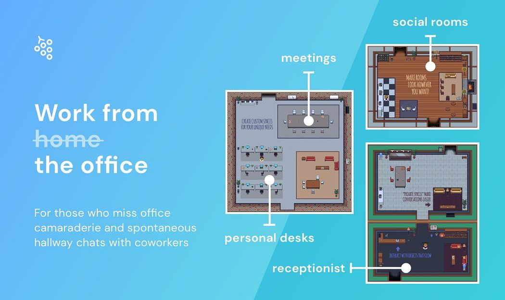
게더타운 — 실제 공간처럼 대화에 들고 나는 방식
게더타운 외에도 아사나, 노션, 슬랙, 구글 워크스페이스를 함께 썼습니다. 비대면에서 어떤 툴로 일할지 고민하는 것 자체가 중요한 일이라, 새 협업 툴을 찾아보고 장단점을 비교하며 계속 실험했습니다.
가상 오피스에 담은 감성 소통
게더타운이 기존 화상회의와 다른 점은 아바타를 통해 소통한다는 것이었습니다. 내 모습이 어떻게 보일지 신경 쓰는 대신 좀 더 편하고 친근하게 대화하게 됩니다. 자동으로 연결·해지되는 통화, 화이트보드 같은 외부 연동, 공간을 원하는 대로 꾸미는 기능이 그 경험을 만듭니다.
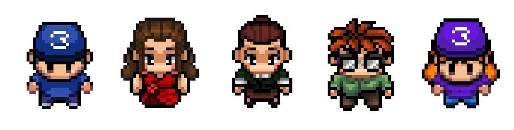
각자의 아바타로 출근합니다
시행착오 — 스탠드업을 없앤 이유
처음에는 매일 아침 게더타운에서 10~15분 스탠드업을 했습니다. 어제 한 일, 오늘 할 일, 막힌 지점을 짧게 나누고 길어질 것 같으면 필요한 사람끼리 따로 모였습니다. 아침이라 얼굴 없이 목소리로만 진행했습니다.
게더타운 스탠드업 미팅
그런데 딜리버스는 자율 근무제를 권장하고, 팀원마다 아침형·저녁형이 뚜렷하게 갈립니다. 오전 스탠드업은 사실상 출근 시간을 고정하는 장치로 작동하고 있었습니다. 이후 각자의 근무 시간을 존중하는 다른 방식으로 바꿨고, 오전에 게더로 출근하는 일은 자연스럽게 사라졌습니다.
아무리 좋은 툴이라도 조직에 맞는 문화와 근무 환경을 만들지 못하면 결과가 좋을 수 없습니다. 적절하지 않다면 빠르게 결정하고 과감히 없애는 편이 낫습니다. 참고로 해외에서 일하는 팀원이 있어 미팅 시간을 정할 때는 시차도 함께 고려했습니다.
그 뒤로 — 해피아워
매주 금요일 30분, 게더타운에서 해피아워를 했습니다. 업무만큼이나 팀원 간 관계와 팀의 멘탈 관리도 중요하기 때문입니다. 게임에서 지면 다음 주 테마를 준비하는 규칙이라 게임을 좋아하지 않는 사람도 자연스럽게 섞였습니다.
리모트에 실패하지 않으려면
재택은 장점만큼 단점도 큽니다. 개인의 만족도는 올라가지만 잘못하면 24시간 퇴근이 없어집니다. 그래서 계획이 필요합니다. 업무에 집중할 시간과 개인의 시간을 스스로 구분해야 하고, 팀도 소통 방법과 최소한의 규칙을 정해야 합니다. 관계도 마찬가지여서, 친해지려는 노력을 계획하지 않으면 팀이라는 감각이 잘 생기지 않습니다.
팀원마다 외향적인 사람도 내향적인 사람도 있어 적응 속도와 방향이 다릅니다. 오래 걸리더라도 모두가 만족할 결과를 찾아야 하고, 결국 같이 만들어야 합니다.
07 / ESG
탄소 중립 ESG 솔루션 기획
건물 운영 단계의 탄소 배출 감축을 위한 비즈니스 모델. 스마트 난방 제어와 히트 펌프, 배출 관리 소프트웨어, 에너지 효율 컨설팅을 묶은 제안.
기획2024
자세히 →
2050 탄소 중립 목표에서 건물 운영 단계의 배출 감축에 초점을 맞춘 비즈니스 모델 기획입니다. 시장 조사로 기회가 어디에 밀집돼 있는지 먼저 파악하고, 그 위에 사업 모델을 얹었습니다.
주거용 건물이 전체 배출량의 60%를 차지하는 구조 분석
스마트 난방 제어와 히트 펌프 등 탈탄소화 기술 검토
탄소 배출 관리 소프트웨어와 에너지 효율 컨설팅을 묶은 사업 모델
왜 건물 운영을 골랐나
전 세계 온실가스의 약 1/3이 건물에서 나오는데, 건물 수명 주기로 나눠 보면 자재 조달이 10~30%, 건축 과정이 약 5%인 반면 운영·유지보수가 60~80%를 차지합니다. 오래 쓰는 동안 계속 에너지를 쓰기 때문입니다. 그래서 진입 지점을 운영 단계로 잡았습니다.
기회는 소수 지점에 몰려 있었습니다. 상위 10개국이 건물 운영 배출량의 65%, 주거용 건물이 60%, 그중 공간·온수난방이 에너지 수요의 약 60%입니다. 난방이 가장 큰 감축 기회이고, 스마트 제어와 히트 펌프는 이미 상용화돼 합리적인 가격대에 들어와 있습니다. 기존 건물은 개보수가 핵심인데, IEA는 연간 개보수 비율이 1% 미만에서 2050년까지 2.5%로 두 배 이상 올라야 한다고 봅니다.
시장 구조와 기술 현황은 BCG 공개 리포트를 참고해 정리했습니다.
사업 모델
위 분석을 근거로, 건설 과정의 탄소 배출을 줄이면서 기업의 지속 가능성도 확보하는 통합 솔루션을 설계했습니다. 타겟은 대형·중소 건설사, 공공기관, 친환경 건축에 관심 있는 부동산 개발사입니다.
구성
내용
제품
탄소 배출 저감 건설 자재 개발·공급
서비스
에너지 효율 개선 컨설팅, 건설 현장 에너지 관리 시스템 구축, 재생 에너지 통합
소프트웨어
탄소 배출 관리 소프트웨어 (라이선스·구독)
경쟁 우위는 자재·기술·컨설팅을 묶은 통합 제공과 정부 지원 사업을 통한 비용 절감에 뒀습니다. 단기에는 정부 지원 사업 참여와 파일럿으로 성공 사례를 만들고, 중기에는 시장 점유율 확대와 기술 개선, 장기적으로 글로벌 진출을 목표로 하는 3단계 전략입니다.
성과 지표와 리스크
성과는 탄소 배출 저감량, 시장 점유율과 매출 성장률, 신규 고객 수와 만족도, 파일럿 성공 사례 수로 측정합니다. 리스크로는 기술 개발 실패와 시장 진입 장벽, 경쟁사의 신기술 도입, 그리고 정부 정책 변화를 뒀습니다 — 인센티브에 기대는 모델이라 정책 리스크가 가장 큽니다.
08 / O2O
O2O 그림 구독 · 경매 플랫폼
예술 작품의 접근성을 높이고 작가에게 새로운 판로를 여는 플랫폼. 시장 분석과 사용자 흐름, 구독료·경매 수수료·스폰서십 수익 모델을 정리.
기획O2O
자세히 →
온라인과 오프라인을 연결해 그림을 구독하거나 경매로 사는 플랫폼 기획입니다. 예술 작품의 높은 진입 장벽을 낮추고, 작가에게는 새로운 판로를 여는 것이 목표였습니다.
글로벌 미술 시장 성장세와 경쟁사 분석
구독과 경매 두 갈래의 주요 기능과 사용자 흐름 설계
구독료·경매 수수료·스폰서십 수익 모델과 마케팅 전략
출발점
그림을 사고 싶어도 가격과 정보의 장벽이 높고, 작가는 작품을 노출하고 팔 기회가 부족합니다. 팬데믹 이후 온라인 미술 시장이 빠르게 커지고 디지털 아트와 온라인 경매가 자리 잡으면서, 디지털 전환에 맞는 새로운 유통 모델이 필요해졌습니다.
경쟁사와 차별점
경쟁사
강점
Saatchi Art
대규모 컬렉션, 맞춤형 아트 자문, 강력한 아티스트 커뮤니티
Artsy
아트 투자 자문, 강력한 경매 플랫폼, 광범위한 네트워크
Artspace
독점 컬렉션, 편집 콘텐츠, 고급 시장 집중
셋 모두 판매 중심입니다. 그래서 차별점을 구독 모델 도입, 지역 예술가와의 긴밀한 협력, 오프라인 전시와 연계된 경험에 뒀습니다. 한 번 사고 끝나는 대신 매달 새 작품이 오가는 관계를 만드는 쪽입니다.
SWOT
강점
편리한 접근성, 다양한 작품, 맞춤형 큐레이션
약점
실물 확인의 어려움, 물류·배송 문제
기회
디지털 전환에 따른 신규 고객 유입, 예술에 대한 관심 증가
위협
기존 대형 플랫폼과의 경쟁, 저작권 문제
서비스 구성
구독은 일정 금액을 내고 매달 새 그림을 받는 방식으로, 취향에 맞춘 큐레이션을 제공합니다. 경매는 실시간 경매와 예약 경매, 최소 입찰가 설정을 지원합니다.
기능
설명
작품 검색·필터
스타일·가격·작가별 검색
작가 소개와 작품 설명
이력과 설명을 상세히 제공해 구매 판단을 도움
온라인 경매
실시간·예약 경매, 최소 입찰가 설정
구독 관리·결제
플랜 변경, 결제 정보 관리, 구독 내역 조회
리뷰·평가
작품과 작가에 대한 사용자 평가로 신뢰성 확보
사용자 흐름은 가입 → 서비스 선택 → 작품 검색 → 결제·입찰 → 배송·수령으로 설계했고, 실물이 오가는 서비스라 배송 상태를 실시간으로 추적할 수 있게 했습니다.
수익 모델
구분
내용
구독 이용료
월간·연간 등 요금제
경매 수수료
낙찰 금액의 일정 비율
광고·스폰서십
예술 관련 브랜드와의 제휴
여기까지가 기획 단계에서 확정한 범위입니다. 구체적인 구독료와 수수료율, 갤러리·배송·보험 업체와의 제휴 조건은 파트너십 협상이 필요한 항목이라 미결로 남겨뒀습니다.
Capability
06 / 스킬 · 학력
딜리버스에서는 판매자 어드민(OMS)을 Retool로 직접 개발해 v2·v3까지 배포했습니다. 기획과 구현 사이에 통역이 필요 없다는 뜻입니다.
Product ManagementAdvanced
레벨스·딜리버스에서 복수 프로덕트 총괄. PRD와 운영 정책 문서를 직접 작성합니다.PRD 목차 열어보기 →